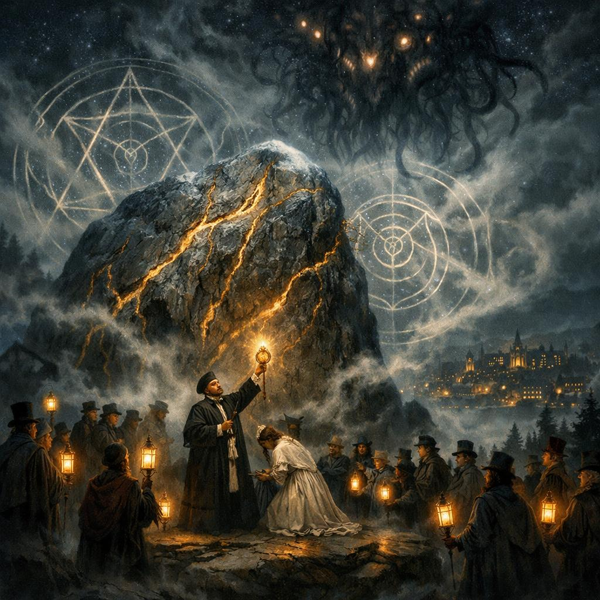

A Heptaverse Setting · The Fifth Reality
Victorian Gothic Horror · New Cambridge, Connecticut
Tendrils in the Fog
Setting Overview
Where Progress Meets the Unknowable
Gas lamps struggle against the perpetual fog of New Cambridge, Connecticut — a city where Victorian propriety has become armour against cosmic horror, and industrial ambition has torn holes in the fabric of reality itself. Steam-powered machinery channels otherworldly forces through copper pipes and brass valves. The bells of three great foundries ring with frequencies that do not belong to this world. And beneath the cobblestone streets, in tunnels that go deeper than any map acknowledges, something remembers everything you feed it.
This is the Fifth Reality of the Heptaverse — a place where progress is measured not in invention, but in how much of the natural order you are willing to discard. Three founding families — Whitmore (bells and resonance), Ashford (steam and pressure), and Blackwood (tunnels and hidden spaces) — have shaped a city that should not exist, conducting industrial experiments that pierce the veils between worlds.
In New Cambridge, Lucidity is the currency of survival: the mental clarity required to navigate a society built on carefully maintained facades, while beneath them the city's experiments produce citizens who are no longer entirely present in the world they walk through. The fog remembers every compromise. Every bargain. Every choice.
New Cambridge
The City of Perpetual Twilight
New Cambridge occupies a peculiar geography — a coastal New England city locked in permanent atmospheric uncertainty. The fog that rolls in off the harbour has never fully retreated since the Dimensional Engine Project of 1885, when the Three Families briefly tore open stable apertures to other Heptaverse realities. What came back through those apertures did not belong here. And it stayed.
The city is layered in ways that both mirror and defy Victorian social convention. The industrial quarter thunders with Ashford steam works, where engineers maintain pressures beyond physical limits and the machinery has begun developing opinions. The bell quarter operates under Whitmore oversight — foundries where bronze is alloyed with things that have no chemical name, producing instruments that resonate with the spaces between worlds. Beneath the entire city, the Blackwood tunnel networks form a city-within-a-city where spatial relationships grow unreliable and the walls are thinner than they appear.
High society maintains its rituals with ferocious precision — dinner parties, charitable galas, the Season — because propriety in New Cambridge is not merely custom. It is structural load-bearing. The social facades are the only framework preventing the city from fully acknowledging what it has become: a place where industry and cosmic horror have grown so entangled that neither can be safely removed from the other.
Character Heritages
Who Walks the Gaslit Streets
New Cambridge draws its population from across the Heptaverse — and from forces the Heptaverse does not yet have names for. Five heritages walk the fog-slicked streets, each navigating the city's social hierarchies and supernatural dangers in their own way.
Humans dominate New Cambridge's social, political, and industrial structures. They founded the Three Families, built the steam infrastructure, and established the hierarchies that define the city — while remaining largely blind to the cosmic consequences of their ambitions.
Drawn to New Cambridge by the same cosmic disturbances that attract other supernatural phenomena, the Lightborn have integrated into Victorian high society, where their natural bearing reads as exceptional breeding. Their Inner Light appears as a luminous complexion, never obviously supernatural.
Among the oldest sentient beings in New Cambridge, the Elderkin remember the land before the fog, before the Three Families, before industry awakened things that should have slept forever. They serve as scholars, antiquarians, and advisors — repositories of knowledge the city would prefer forgotten.
New Cambridge's Elves are refugees from growing industrialisation elsewhere, drawn by the city's supernatural emanations. Their fey heritage makes them exquisitely sensitive to the city's distortions — an asset for investigation, a liability for wellbeing. Victorian society appreciates their aesthetic grace while quietly ignoring their suffering.
The Weefolk occupy New Cambridge's liminal spaces — chimney sweeps, tunnel runners, household servants — moving through places too small for human attention. What they've built in those margins is remarkable: an intelligence network that spans the entire city, passing through gaps in walls and minds alike.
When the Dimensional Engine Project of 1885 tore open stable apertures to other realities, those present were exposed to the fundamental void between worlds. They survived — but defined thereafter by absences rather than additions. Cold that does not warm. Weight that does not settle. Time that does not flow. Memory that does not hold.
Void Touched — Absence Types
Each Void Touched individual manifests one primary absence: Thermal (cold that never warms) · Gravitational (weight without anchor) · Temporal (time that flows around you) · Acoustic (silence where sound should be) · Chromatic (colour that drains at your touch) · Mnemonic (presence that cannot be remembered)
The Three Paths
How Power Moves in New Cambridge
The 2d10 system's three paths of power manifest distinctly in Victorian industrial society — where force, knowledge, and cosmic connection have each found their own peculiar expression in gas-lamp and steam.
First Path
Martial
Physical prowess adapted to the industrial age — factory guards, military officers, and the Three Families' enforcers who make their mark through force of body and will. Combat in New Cambridge means firearms, industrial weapons, and the terrifying efficiency of those trained against supernatural threats.
Second Path
Mental
Knowledge and strategy are the weapons of New Cambridge's investigators, engineers, and occult scholars. In a city built on secrets, mastery of information — how to gather it, interpret it, and weaponise it — determines survival as surely as any pistol. The city's mysteries yield only to the relentless mind.
Third Path
Karmic
Intuition and spirit find strange expression in New Cambridge. Those who walk the Karmic path sense what others cannot — the resonance behind the bell tones, the intent within the fog, the shape of the void pressing against reality's walls. In this city, cosmic sensitivity is both gift and curse in equal measure.
New Cambridge's Unique Professions
Beyond the universal eight, New Cambridge offers thirteen professions found nowhere else in the Heptaverse: the Bell Founder who rings the spaces between worlds · the Chronometer who keeps time from unravelling · the Flesh Sculptor who repairs what industry breaks · the Campanologist who rings change-ringing reality itself · and nine others shaped by the unique horror of a city that chose progress over sanity.
Setting Unique Mechanic
The Resonance Coin System
In New Cambridge, true currency is not measured in pounds or shillings — it is measured in coins that ring with cosmic frequencies. The six types of Resonance Coin serve simultaneously as money, keys, and conduits for supernatural power, creating a shadow economy that operates parallel to ordinary Victorian commerce. They cannot be purchased. They must be earned — through cosmic exposure, entity bargains, ritual sacrifice, or professional service at the edge of the possible.
Tarnished bronze that rings faintly when touched. Grows warm near temporal anomalies. Created in the Whitmore Grand Foundry through alchemical processes that are not discussed in polite society. Grants access to bell towers, temporal research chambers, and the acoustic machinery that underpins the city's supernatural infrastructure.
Warns of temporal distortionsPerpetually warm silver that trails mist in cool air. Impossible to tarnish. Condensed from the Ashford Central Works' master steam vents under conditions that would kill an unprotected worker. Grants access to pressure facilities, Ashford industrial complexes, and mechanical engineering workshops where physics is treated as a suggestion.
Powers devices without pressureOxidized copper bearing patterns that resemble tunnel maps — patterns that shift when unobserved. Mined from the deepest Blackwood tunnels where reality grows thin and distances are approximate. Grants access to the underground networks, dimensional transit facilities, and spatial research laboratories where rooms are larger inside than out.
Points toward tunnel entrancesSemi-real gold that changes weight based on the holder's mental state. Lighter when dreaming. Crystallized from the collective unconscious of New Cambridge's sleeping population — which has not slept peacefully since 1885. Grants access to dream parlors, oneiric research facilities, and the nightmare treatment centres that do a brisk trade.
Records and replays dreamsLight-absorbing black metal that seems to exist slightly outside normal space. Harvested from the spaces between realities, where the Void Touched first emerged. Disrupts supernatural effects. Creates small reality distortions. Grants access to void research facilities and entity containment services — at the cost of attracting attention from things beyond reality.
Extremely dangerous to carryIridescent metal that hums with all harmonic frequencies simultaneously, appearing to contain shifting colours that have no name. Created only when all other coin types achieve perfect harmonic resonance — an event that has occurred fewer than one hundred times. Grants access to anywhere. Fewer than one hundred exist in the entire city.
Fewer than 100 in existence— Warning posted at all registered Coin Exchange locations
Game System
The 2d10 System
First Path
Martial
Physical prowess and combat training — from military discipline to the brutal pragmatism of factory floors. Those who solve New Cambridge's problems with force of body and will.
Second Path
Mental
Knowledge, strategy, and the relentless analytical mind. In a city built on secrets, the ability to gather, interpret, and weaponise information is the sharpest blade available.
Third Path
Karmic
Intuition and cosmic connection — the ability to sense the resonances behind the bell tones, the void pressing against reality, the shape of things that should not be perceived.
extraordinary effects unique to your profession in New Cambridge.
Setting Unique Mechanic
The Resonance Coin System
New Cambridge runs on a shadow economy invisible to those without the right coin. Six types of supernatural currency — each resonating with a different aspect of the city's industrial-cosmic infrastructure — serve simultaneously as money, keys, and power sources. They cannot be bought. They must be earned through cosmic exposure, entity bargains, or professional service at the edges of the possible. The Resonance Coin System is not just a mechanic; it is a map of what New Cambridge considers valuable, and a reminder that every source of power in this city has a cost that does not appear in the ledger.
COMING
SOON